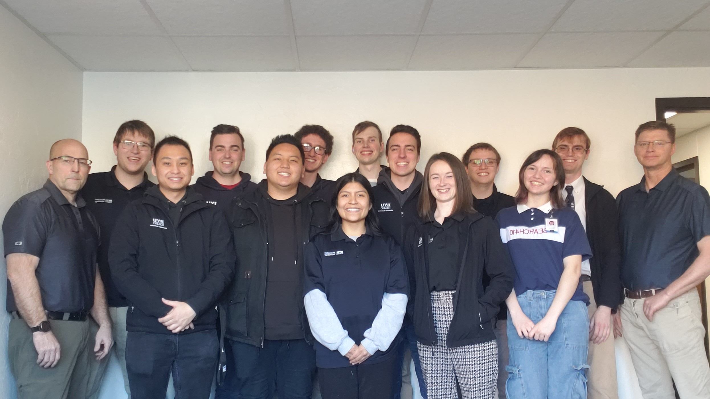

BYU Idaho | Classroom Technology
Welcome to Classroom technologies. Here you'll be able to find information on what exactly Classroom tech does on campus, get more familiar with our classrooms, and even get to know our classroom techs a little bit.

Ever wonder what you can do to help when classrooms run into issues? In our troubleshooting informtaion page you can learn more about how our classrooms are setup, what some of the most common issues our classrooms have, and learn about some simple and easy solutions that anyone can try out for themselves.
Click for Help
While there is a lot here for those who want to get to know what Classroom tech is all about, there are certain things that not everyone can have access to. Here is where we have our accounts for the many websites and services we use to keep campus running. You wont be able to access much, but there will still be a few things for you to check out and learn about.
Classroom Tech Users
Click here to go to our Classroom techs page. Here you'll be introduced to the many people who work here at classroom technologies, and get to know them a little bit.